3.1.1. Модель итерационного блочного шифра
3.1.1. Модель итерационного блочного шифра
Блочные шифры представляют собой подкласс симметричных криптографических алгоритмов – алгоритмов, использующих один и тот же ключ для шифрования и расшифрования информации. Математически блочный шифр является обратимой функцией:
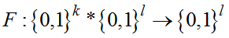.
Подлежащий шифрованию текст разбивается на блоки равной длины, и каждый блок шифруется с помощью одного и того же криптопреобразования, зависящего от секретного ключа. Для повышения стойкости шифра это преобразование циклически повторяется несколько раз (итерируется).
При построении БШ используется начальное преобразование данных, однократно применяемое к входному блоку, и обратное ему конечное преобразование, преобразующее блок данных после завершения цикла шифрования. При выполнении шифрования, обычно, требуется количество ключевого материала, значительно превышающее размер ключа алгоритма, поэтому в БШ применяется алгоритм расширения ключа пользователя до требуемой длины. Структурная модель типового блочного шифра представлена на рис. 3.1.
Каждый из элементов в составе модели является обязательным и отсутствие любого из них говорит о слабости алгоритма шифрования.
Блочный шифр также является некоторой функцией битов шифртекста от битов открытого текста и ключа. Задачей блочного шифра является обеспечение максимальной нелинейности этой функции и зависимости каждого выходного бита от максимального числа (в современных шифрах от всех) входных бит. Для обеспечения этого раундовая функция шифра должна удовлетворять принципам рассеивания и перемешивания. Конечной целью применения данных принципов является максимальное затруднение описания шифра системой однородных уравнений (над одним полем, например, по модулю 2).
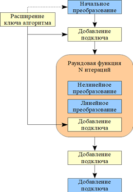 |
Рис. 3.1. Структура и основные элементы современного блочного шифра |
Рассеивание − это свойство шифра, при котором один символ (бит) открытого текста влияет на несколько символов (битов) шифртекста, оптимально − на все символы в пределах одного блока. Достигается применением нелинейного преобразования.
Перемешивание − это свойство блочного шифра скрывать зависимости между символами открытого текста и шифртекста.
Блочный шифр, как и любой другой криптографический примитив, должен быть нелинейным, так как в противном случае он автоматически становится неустойчивым к атаке вида «открытый текст/соответствующий ему шифртекст». Это происходит потому, что, если шифр является линейным, значит можно его описать системой линейных уравнений (далее СЛАУ) относительно переменных открытого текста, шифртекста и ключа. Подставив в эту систему значения переменных открытого текста и соответствующего ему шифртекста, мы получим СЛАУ, при решении которой будет найден ключ шифрования. Решение систем линейных уравнений большого размера (128*128 при использовании одного блока и 128 битного ключа) сегодня не представляет особой трудности. Так, например, метод Гаусса имеет сложность 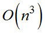 арифметических операций, существуют методы с меньшей сложностью порядка 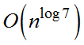.
Таким образом, для решения СЛАУ 128*128 необходимо всего 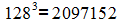 операций, что потребует не более 10 секунд для решения и последующего взлома шифра. Совсем иначе обстоят дела с системами нелинейными уравнений. Сегодня не существует эффективных методов решения систем нелинейных уравнений такого размера. Это возможно лишь в некоторых частных случаях, например, когда уравнений гораздо больше, чем переменных, тогда можно вместо каждого нелинейного члена добавить переменную (т. е. выполнить его линеаризацию) и решить уравнение как СЛАУ. Поэтому в криптографических примитивах стараются сделать систему максимально нелинейной. Понятие нелинейности при этом несколько отличается от математического.
Нелинейность − это степень отличия от линейного уравнения, а не максимальная степень члена уравнения. Так, например, уравнение 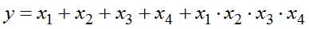 ведет себя как нелинейное только в одном случае из 16 возможных, когда все переменные равны 1. Напротив, уравнение с большим количеством нелинейных членов разных степеней 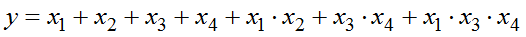 имеет гораздо большую нелинейность. В идеале, в составе каждого нелинейного уравнения в системе, описывающей шифр с вероятностью, должны появляться все возможные члены общей нелинейной формы булевой функции:

и это обеспечивается в составе качественных современных блочных шифрах.
В этом случае каждое уравнение будет содержать столько членов, что его будет невозможно записать или хранить в памяти современных вычислительных устройств.
Аналогично нелинейности в составе криптографических примитивов в целом, и в блочных шифрах в частности, важное значение имеет принцип использования операций над разными конечными полями. Это также связано с нелинейностью. Все дело в том, что линейные операции в различных полях становятся нелинейными при их совместном рассмотрении. То есть, при переходе от одного поля к другому уравнение из линейного становится нелинейным. Рассмотрим простейший пример: пусть имеется две переменных 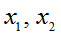 размерностью 4 бита. Для них выполняется операция сложения по модулю 4, результат записывается в переменную y. Эта же операция при представлении ее в поле по модулю 2 имеет следующий вид:
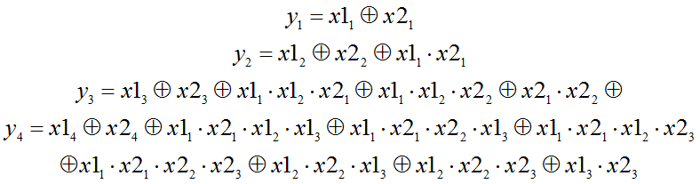,
т. е. из линейной становится нелинейной. Легко представить какой размерности будет уравнение для последнего бита по переводе операции сложения по модулю 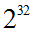 в поле по модулю 2. Аналогичные трудности возникают и при обратном переходе при записи сложения по модулю 2 в системе по модулю 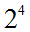.
Основными характеристиками блочного шифра являются:
− размер блока; типовыми размерами являются 64 бита, 128, 192, 256, размер блока в 64 бита в настоящее время считается недостаточным, наиболее часто используется размер 128 бит;
− размер ключа; типовыми размерами являются размеры, аналогичные размеру блока, при этом размер ключа менее 128 бит считается недостаточно защищенным;
− количество раундов; в зависимости от сложности раундовой функции может быть от 4 до 64;
− тип использованного нелинейного преобразования, линейного преобразования, ключевого расписания.
Существуют два подхода к проектированию блочных шифров. Один из них предполагает использование максимально простых и быстрых элементов в составе раундовой функции, но при этом использовании большого количества раундов. Это алгоритмы Tea, DES, ГОСТ 28147-89, Serpent, CAST-256. Второй подход предполагает использование максимально сложных элементов с хорошими характеристиками в раундовой функции, но использование небольшого числа раундов. С его применение созданы шифры AES, Anubis, Crypton.
Если размер блока должен быть безопасным для полного перебора современной техники, то необходимость большого размера блока не столь очевидна. Это связано с тем, что при уменьшении размера блока до 8−16 бит блочный шифр вырождается в шифр простой замены, чем он, по сути, и является только для символов большого размера, например, 128 бит. Если размер блока блочного шифра будет равен от 8 или 16 бит, то несмотря на свою сложную внутреннюю структуру такой шифр можно взломать обычным частотным анализом, а с использованием атаки «открытый текст/шифртекст» и того быстрее. Если размер блока будет равен 24 или 32 бита, то у криптоаналитика появится возможность, накапливая статистику блоков, получать дополнительную информацию об открытом тексте.